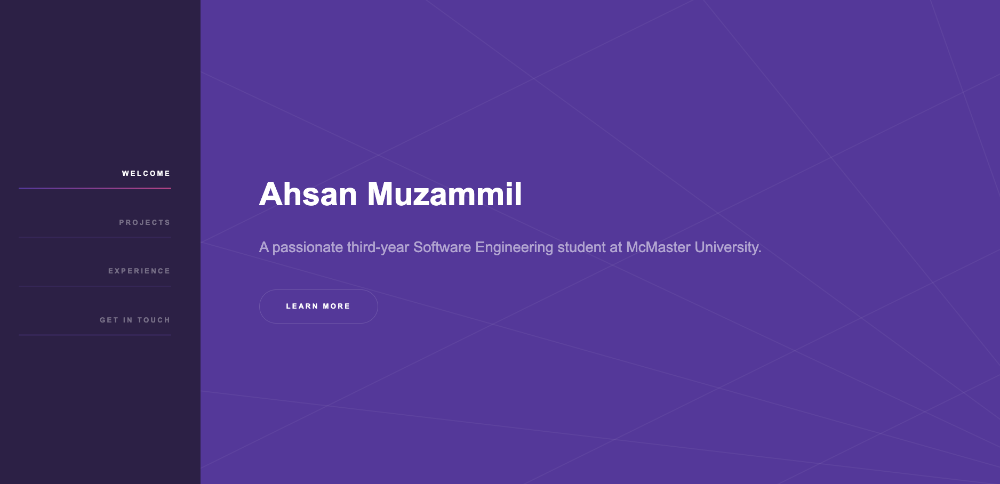

Project Details
Introduction
In this project, I created a personal portfolio website using HTML, CSS, and JavaScript. The primary goal was to develop a platform to showcase a brief introduction about myself, my professional experiences, and the various projects I have worked on. The website serves as a central hub for visitors to learn more about my background and expertise.
The website was designed to be user-friendly and visually appealing, with a focus on clear navigation and a responsive layout that ensures compatibility across different devices, including desktops, tablets, and mobile phones. The use of JavaScript adds interactivity, enhancing the overall user experience.